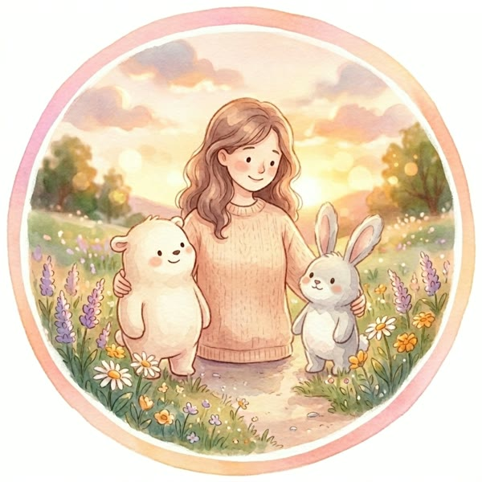

HSPの特性も、自分らしさのひとつ🌼
自分のペースで楽しみながら、
自分の強みや可能性を見つけるサポートをします。
内容
個別カウンセリング
形態
オンライン
対面は要相談
対象
個人のみ
はじめまして。
本間喜子（ほんま よしこ）です。
私自身、HSS型HSPとして、自分の特性や生きづらさと向き合ってきました。
これまで職場での人間関係やパワーハラスメントに悩み、自分に自信を持てなくなった経験もあります。周囲に合わせて頑張りすぎたり、自分の気持ちを後回しにしたりする中で、自分自身を理解し、大切にすることの必要性に気づきました。
そして、自分自身も悩んできたからこそ、同じように人間関係や生きづらさに悩んでいる方の気持ちに、同じ目線で寄り添いたいと思うようになりました。
高校生の頃から21年間続けてきた前向きノートには、そのときの気持ちや心に響いた言葉、目標などを書き留めてきました。
ノートを通して自分の気持ちを整理したり、物事の受け止め方を変えたりする中で、自分を知ることの大切さを実感しています。
現在はHSP専門カウンセラーとして、一人ひとりが自分の強みや可能性を見つけるお手伝いをしたいと考えています。
相手の気持ちを大切にし、安心して話せる関係づくりを心がけています。
自分を知り、自分のペースで楽しみながら可能性を広げていけるように、心を込めてサポートしていきます。
フォームまたはメールにて、ご相談内容・ご希望日程をお送りください。
目的やご要望について、詳しくお伺いします。
内容に合わせて、最適なプランをご提案します。
内容にご了承いただき次第、日程を確定して実施します。